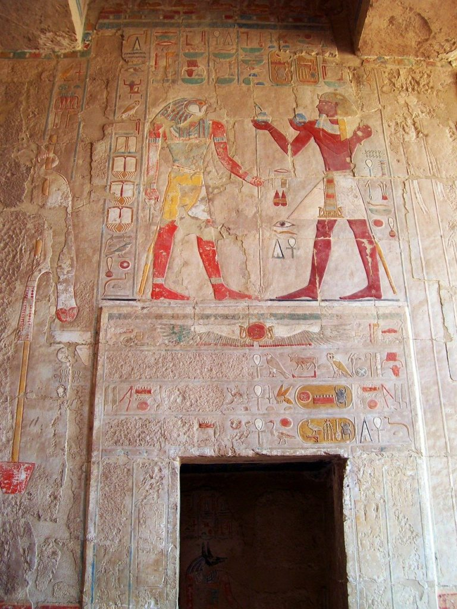
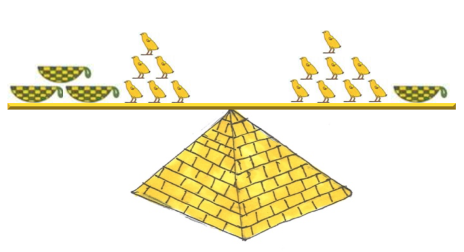

Synet av den åpnede hengelåsen medførte en dempet jubel blant gruppens medlemmer. Du fulgte etter de andre som gikk inn i rommet innenfor og ble stående og måpe av de fargerike utsmykningene på veggene. De mest stressede gikk raskt bort til den svarte branndøren og dro i dørhåndtaket bare for å oppdage at døren ikke bare var lukket, men også låst. På murveggen ved siden av fantes en elektronisk kodelås og bokstaver fra A til Z. De pustet tungt ut og stønnet oppgitt. På døren hang en ny oppgave på baksiden av den laminerte advarselen.
Faraoen Khufu var i en periode dobbelt så gammel som sin sønn Kawab. Førstehustruen, dronning Meritites I, var 4 år yngre enn faraoen. De tre familiemedlemmene var til sammen 106 år. Hvor gammel var sønnen Kawab?
Hvor mange kyllinger er det i hver kurv?
Løs likningen
Bytt ut tallene med den bokstaven i alfabetet som har denne plasseringen. Sett sammen bokstavene til et løsningsord. Løsningsordet finner du ikke på havbunnen, du får det heller ikke fra en avdød slektning, det er et verb eller et sportslig støttesystem.